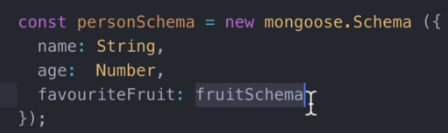

Relationships

To establish a relationship, we need to establish a key inside a schema to another schema. From the example above, inside the personSchema, we specify a key called favouriteFruit and the value inside is a fruitSchema. Whenever we print out a person document, favouriteFruit will generate their _id that specifies the item inside the fruit collection.
So now we can use this like...